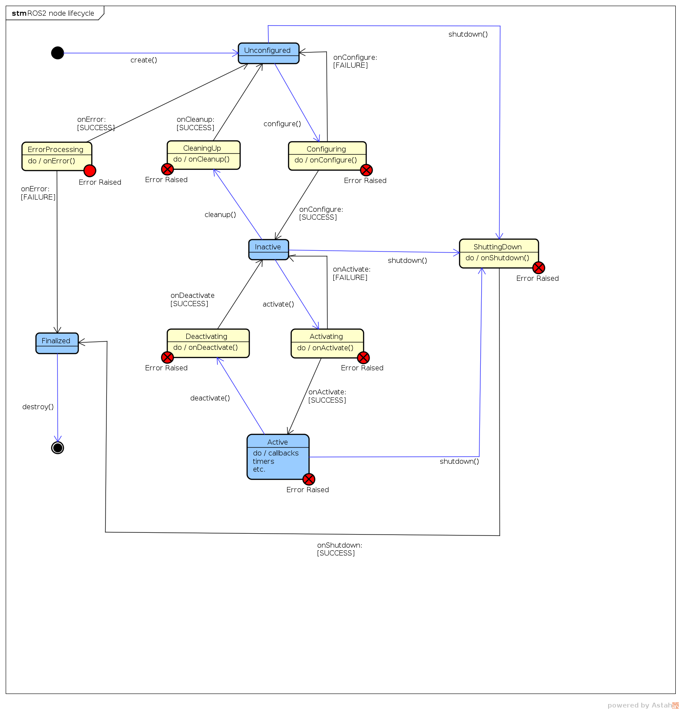

rlc (ROS Client Library)
rcl provides the standard APIs for interacting with ROS2 (node, topic, service, action, parameter, logging, context, …). The language-specific libraries are built on the C-library rcl.
C++ |
Python |
|
|---|---|---|
source repository |
||
documentation |
import with:
C++
#include "rclcpp/rclcpp.hpp"
Python
import rclpy
A typical ROS program consists of the following operations:
Initialization: done by calling
initfor a particularContext. Must be done before any ROS node is generatedNodes generation: either using
create_nodeor by instantiating aNode.Process node callbacks: to process work waiting to be executed, the
spinfunctions are used.Shutdown: when finished with a previously initialized context, the
shutdownfunction is called, invalidating all entities derived from the context.
Main APIs (python version):
init: initialize ROS communications for a given contextshutdown: shutdown a previously initialized contextspin: execute work and block until the context associated with the executor is shutdown. Callbacks are executed by the providedexecutor.parameter
type
description
nodeNodenode to add to the executor to check for work
executorExecutorexecutor to use (defaults to global executor if
None)
Nodes and Node class
Main methods:
__init__: initializeNodeparameter
type
description
node_namestrname of the node
contextContextoptional context
cli_argsList(str)optional list of command-line arguments
namespacestroptional namespace to which relative topic/service names will be prefixed
#Example class myNode(Node): __init__(self): super.__init__('myNodeName')
create_publisher->Publisher: create a new publisherparameter
type
description
msg_type.msgimported objecttype of ros msg it publishes
topicstrtopic to which it publishes.
qos_profileUnion(QosProfile,int)QoS_profileor history depth/queue size (int) to apply to a publisher.#Example myNode.my_pub = myNode.create_publisher(MyType,'myTopic',10)
create_subscription->Subscription: create a subscription:parameter
type
description
msg_type.msgimported objecttype of ros msg it subscribes to
topicstrtopic to which it subscribes
qos_profileUnion(QosProfile,int)QoS_profileor history depth/queue size (int) to apply to the subscription.callbackCallableuser-defined callback, called when a message is received by the subscription
rawboolIf True, then received messages will be stored in raw binary representation.
#Example myNode.my_sub = myNode.create_subscription(MyType,'myTopic',10, my_sub_callback) def my_sub_callback(message): #message is like a struct that can be accessed #through message.fieldname ...
create_service->Service: create a new service server:parameter
type
description
srv_type.srvimported objecttype of service interface
srv_namestrname of the service
callbackCallable [SrvTypeRequest, SrvTypeResponse]user-defined callback, called when a service request is received by the server. You can send request and response as parameters.
qos_profileQoSProfileQuality of service profile to be applied to the service’s server
#Example myNode.my_srv = myNode.create_service(MyType,'my_service', my_srv_callback) def my_srv_callback(request, response): ... #request and response are like struct that can be accessed #through request.fieldname or response.fieldname return response
create_client->Client: create a new service clientparameter
type
description
srv_type.srvimported objecttype of service interface
srv_namestrname of the service
qos_profileQoSProfileQuality of service profile to be applied to the service’s client
#Example class MyCli(Node): #... self.my_cli = self.create_client(MyType,'my_service') request = MyType.Request() #this method is generated from the .srv file using rosidl generators. See ROS_concepts/interfaces. def send_request(self): #access request field by request.<fieldname> #for example we can use: self.future = myNode.my_cli.call_async(request) #... cli_node = MyCli() #we can get results as: if cli_node.future.done(): try: response = cli_node.my_cli.future.result() except Exception as e: #exception, request failed else: #request succeeded, use response to access result
create_timer->Timer: create a new timer, which calls a callback function every periodparameter
type
description
timer_period_secfloatPeriod (s) of timer
callbackCallableuser-defined callback, called when the timer expires.
get_logger()->RcutilsLogger: gets the node loggerdestroy_node(): explicitly destroys the node and frees resources (subscribers, publishers…). Note that this is not always required as resources may be freed by Python’s garbage collector.To destroy individual resources use
destroy_<resource> (<resource>)(e.g.destroy_publisher(publisher))
Topics
There are two main classes:
Publisher, with main methods:get_subscription_count()->int: get amount of subscribers that the publisher haspublish: publishes a messageparameter
type
description
msgUnion(MsgType,bytes)ROS message to publish
destroy()@property topic_name->str
Subscription, with main methods:destroy()@property topic_name->str
Services
There are two main classes:
Service: ROS service server, with main methods:send_response: send a service responseparameter
type
description
responseSrvTypeResponseservice response
headercapsule pointing to the service header from the original request
destroy()
Client: ROS service client, with main methods:call->SrvTypeResponse: Make a service request and await resultparameter
type
description
requestSrvTypeRequestservice request
call_async->Future: make a service request and asyncronously get the result. TheFutureobject completes when the request does.parameter
type
description
requestSrvTypeRequestservice request
service_is_ready()->bool: check if there’s a service server readywait_for_service->bool: wait until service is ready (Trueif it is)parameter
type
description
timeout_secfloattimeout, returning
Falseif it expiresdestroy()
Context
A Context encapsulates the lifecycle of init and shutdown. The context is used in the creation of top level entities like nodes and guard conditions, as well as to shutdown a specific instance of init.
RcutilsLogger
Main class for logging information about a node. It’s instantiated by Node.get_logger() method. Main methods:
log: log a message with a specified severityparameter
type
description
messagestrmessage to log
severityLoggingSeverityseverity of the message (
DEBUG,INFO,WARN,ERROR,FATAL…)
There are also individual functions depending on severity:
RcutilsLogger.debug(message),RcutilsLogger.info(message)… They simply call thelogfunction with theseverityargument predefined.
Execution and callbacks
Callbacks are units of work like subscription callbacks, timer callbacks, service calls, and received client responses. There are two components that control the execution of callbacks: executors and callback groups.
Executor: controls the threading model used to process callbacks (which thread callbacks get executed in).CallbackGroup: used to enforce concurrency rules for callbacks.
Quality of service
QoS policies allow to tune communication between nodes. A set of QoS policies combine to form a QoS profile. ROS2 provides predefined QoS profiles to simplify the choice of correct policies for a given use case.
A QoS profile can be applied independently to each instance of publishers, subscribers, service servers and clients. However, if different profiles are used it is possible that they will be incompatible, preventing the delivery of messages.
The base QoS profile currently includes settings for the following policies:
History
Keep last: only store up to N samples, configurable via the queue depth option.
Keep all: store all samples, subject to the configured resource limits of the underlying middleware.
Depth
Queue size: only honored if the “history” policy was set to “keep last”.
Reliability
Best effort: attempt to deliver samples, but may lose them if the network is not robust.
Reliable: guarantee that samples are delivered, may retry multiple times.
Durability
Transient local: the publisher becomes responsible for persisting samples for “late-joining” subscriptions.
Volatile: no attempt is made to persist samples.
Deadline
Duration: the expected maximum amount of time between subsequent messages being published to a topic
Lifespan
Duration: the maximum amount of time between the publishing and the reception of a message without the message being considered stale or expired (expired messages are silently dropped and are effectively never received).
Liveliness
Automatic: the system will consider all of the node’s publishers to be alive for another “lease duration” when any one of its publishers has published a message.
Manual by topic: the system will consider the publisher to be alive for another “lease duration” if it manually asserts that it is still alive (via a call to the publisher API).
Lease Duration
Duration: the maximum period of time a publisher has to indicate that it is alive before the system considers it to have lost liveliness (losing liveliness could be an indication of a failure).
For each of the policies that is not a duration, there is also the option of “system default”, which uses the default of the underlying middleware. For each of the policies that is a duration, there also exists a “default” option that means the duration is unspecified, which the underlying middleware will usually interpret as an infinitely long duration.
Lifecycle
A managed lifecycle allows greater control over the state of ROS system, ensuring all components have been instantiated correctly before starting behaving. This also allows nodes to be restarded/replaced on-line.
A node with managed lifecycle presents a known interface and executes according to known life-cycle state-machine.

There are 4 primary states:
Unconfigured: this is the state the node is immediately after being instantiated.Inactive: represents a node that is currently not performing any processing. The main purpose is to allow a node to be (re-)configured without altering its behavior while running.Active: main state of node lifecycle. The node performs processing, responds to service requests, reads data, produces output…Finalized: states in which the node is immediately before being destroyed. This state supports debugging and introspection.
Transition out of a primary state requires an external supervisory process, unless an error is thrown in Active state.
There are 7 transitions exposed to supervisory processes:
create()–>Unconfiguredconfigure()–>Configuringcleanup()–>CleaningUpactivate()–>Activatingdeactivate()–>Deactivatingshutdown()–>ShuttingDowndestroy()–> []
There are also 6 transition states:
Configuring: theonConfigure()callback is used to load node configuration and perform setup. Usually these are the tasks that must be performed once in a node’s lifetime, resources that must be hold, permanent subscriptions or publications.CleaningUp: theonCleanup()callback is used to clear all state and return the node to a functionally equivalent state as when first created.Activating: theonActivate()callback is used to do any final preparation (requiring short time) to start executing. This may include acquiring resources that are only held when the node is actually active (e.g. hardware access).Deactivating: theonDeactivate()callback is used to reverse changes performed inActivatingstate.ShuttingDown: theonShutdown()callback does cleanup before node destruction. The originating state is passed to the method.ErrorProcessing: This state may be entered from any user-code processing. TheonError()callback is used to handle errors. If this succeeds, the state reverts toUnconfigured. Otherwise if it’s not possible to handle all errors, the state becomesFinalizedin preparation for destruction.